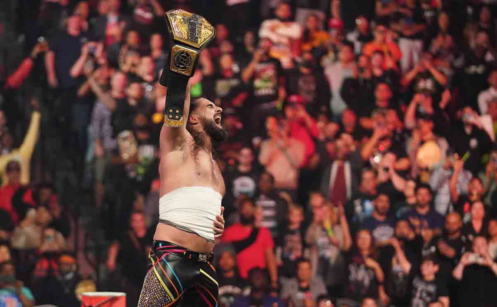
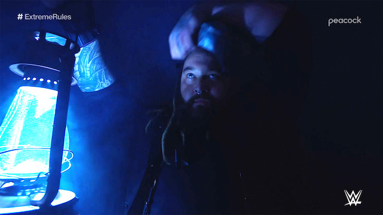
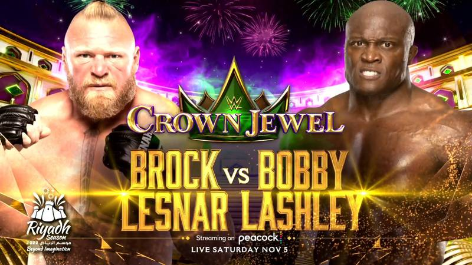

Main Event confirmado para Crown Jewel
Uno de los mayores combates del entretenimiento deportivo tendrá lugar el 5 de noviembre. En el evento Crown Jewel de la WWE, Roman Reigns defiende el título universal indiscutible de la WWE contra Logan Paul. El combate entre el luchador profesional y el YouTuber tendrá lugar en el estadio de la Universidad Rey Saud en Riad, Arabia Saudita. Esta es la continuación de la asociación de WWE con General Sports Authority, que comenzó en 2018.

Rollins campeon USA.
El combate fue breve y dificultoso para los dos involucrados. Después de un primer Pedigree, "The Vision" logró escapar del Hurt Lock rápidamente gracias a las heridas provocadas por "The Beast". Cuando Bobby se encontraba en el suelo, Seth le aplicó una patada antes de finalizarlo con el Curb Stomp y obtener la victoria por cuenta de tres. De este modo, Seth Rollins gana el Campeonato de Estados Unidos de WWE, siendo su segundo reinado con este cinturón y su primera instancia titular desde marzo del 2020. Bobby Lashley finaliza un reinado de 101 días y cinco defensas que empezó en Money in the Bank 2022. "The All Mighty" derrotó al ex campeón Theory el 2 de julio en Las Vegas para levantar este título por tercera ocasión en su carrera.
La vuelta de Wyatt.
Este viernes, después de unos días de espera, Bray Wyatt volvió a SmackDown por primera vez en casi dos años. Había mucha expectación con lo que podía ocurrir y finalmente vimos algo que no muchos esperaban. Bray Wyatt hizo su entrada al ring con un nuevo tema de entrada y dio una promo muy emotiva que fue muy bien recibida por los fans. Al final de la misma, fue interrumpido por la máscara que vimos en Extreme Rules 2022 desde la pantalla grande.
Choque de titanes en Crown Jewel.
Bobby Lashley aplicó una 'lanza' antes de que la campana inicial suene. Su arremetida prosiguió hasta en tres oportunidades más. Sin embargo, el poderío de Lesnar no decayó y pudo recuperarse para aplicar 3 'suplex alemán' a Lashley, además de un ‘F5’ que buscaba ser definitivo. Lashley se puso de pie y aplicó un ‘Candado del dolor’ a Lesnar, quien casi se desvanece. En un intento por recuperarse, el excampeón de UFC alzó sus piernas y se impulsó con las cuerdas superiores, provocando una caída con todo su peso sobre su rival y un conteo que le brindó la victoria.
